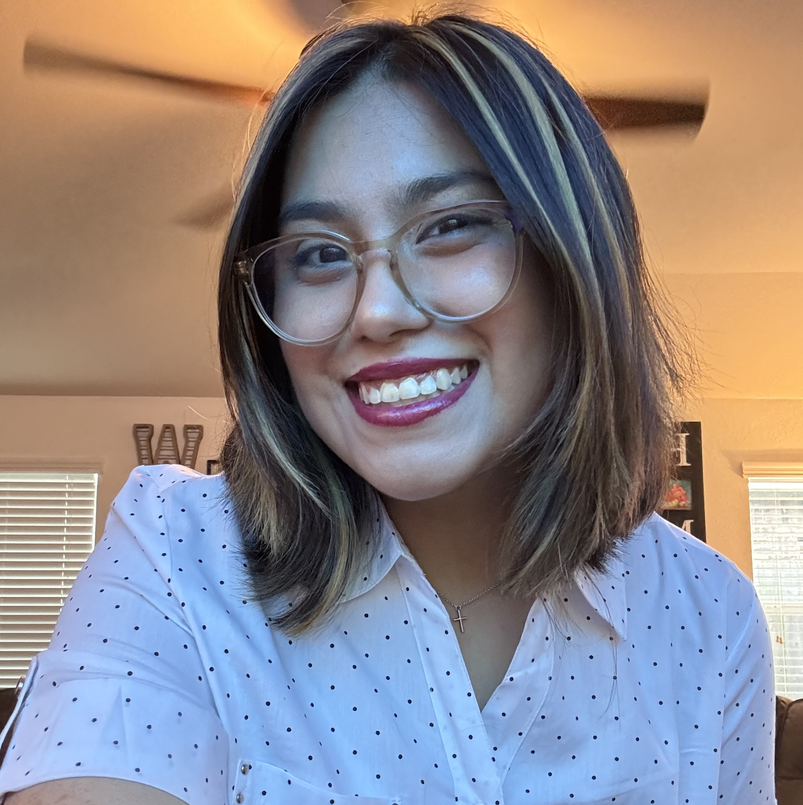

Welcome to my personal website! Here, you will find information about me and work about my progress as an artist so far!
About Me

My name is Sophia Diaz, I am currently an artist attending San Jacinto College getting my Digital Media Design and Production associate's degree. I have been attending San Jacinto College since 2022, I initially started attending college while I attended high school as I was a junior during this time. After I graduated, I wanted to make sure I had all my basic classes out of the way before I started to work on my art classes. My goal was achievable and now I am 4 years into San Jacinto College with two semesters left.
I chose this pathway because I have been an artist my whole life and I wanted to move on to a career to secure my desires as an artist. Though as an artist you will have art blocks and struggles to keep your work going. Unfortunately, I ran into an artist block for a while after 2021. It was a struggle for me to draw because I was putting my education first and felt drained and I didn’t touch a sketch book in a while. But when I graduated highschool and moved on to attending college as a full-time student, I started to gain my artistic talents again after I finished my basics in college, I started to learn how to play with adobe Photoshop, Illustrator, InDesign, Lightroom, and Premiere.
Now, as I progressed in my courses, I feel like I was truly an artist in my drawing and design class. I was able to pick a subject and interrupt art in my own style and explore what I could do better for my career in the future. What I feel in love with again is drawing and I used to do it so much when I was younger as I was so passionate about it and I was able to have passion for my art again this year. I found my lost drawing skills and gained it back, but I still do not know what my career will be, but I hope to figure it out before I leave San Jacinto College.